Оптика в Нижнем Новгороде очки под ключ от 2 990 ₽
оптимальный выбор оправ и линз в Нижнем Новгороде
оправа + линзы с мультипокрытием + работа мастера
Очки без сюрпризов в чеке
Цена «под ключ» и честная консультация. Без скрытых услуг и давления.
Цена «Всё включено» — это стандарт
Цена «Всё включено» — это стандарт
Оправа + линзы с мультипокрытием + работа мастера. Вы платите ровно столько, сколько увидели на ценнике. Никаких доплат за «вставку» или «рецепт».
Оправа + линзы с мультипокрытием + работа мастера. Вы платите ровно столько, сколько увидели на ценнике. Никаких доплат за «вставку» или «рецепт».
Проверка зрения — это не «ловушка»
Проверка зрения — это не «ловушка»
Мы не просто «смотрим буквы». Мы подбираем решение под ваш образ жизни (чтение, офис, авто). Даже если вы не купите очки сегодня — мы будем рады помочь.
Мы не просто «смотрим буквы». Мы подбираем решение под ваш образ жизни (чтение, офис, авто). Даже если вы не купите очки сегодня — мы будем рады помочь.
Вы сами управляете ценой
Вы сами управляете ценой
Мы всегда предлагаем три уровня решений: Стандарт, Комфорт и Премиум. Объясним разницу «на пальцах», а вы сами решите, какой бюджет вам подходит.
Мы всегда предлагаем три уровня решений: Стандарт, Комфорт и Премиум. Объясним разницу «на пальцах», а вы сами решите, какой бюджет вам подходит.
Высокая точность изготовления очков
Высокая точность изготовления очков
Обтачиваем линзы на цифровых станках Essilor с точностью до 0,01 мм. Это гарантирует идеальную посадку линз в оправу.
Обтачиваем линзы на цифровых станках Essilor с точностью до 0,01 мм. Это гарантирует идеальную посадку линз в оправу.
Цены и каталог: оптика в Нижнем Новгороде
Купить очки в Нижнем Новгороде — просто и честно.
Оптика нижний новгород — цены от 2 990 ₽ за комплект. Очки для компьютера, для водителей, фотохром, детское зрение. Подберём решение после проверки зрения.
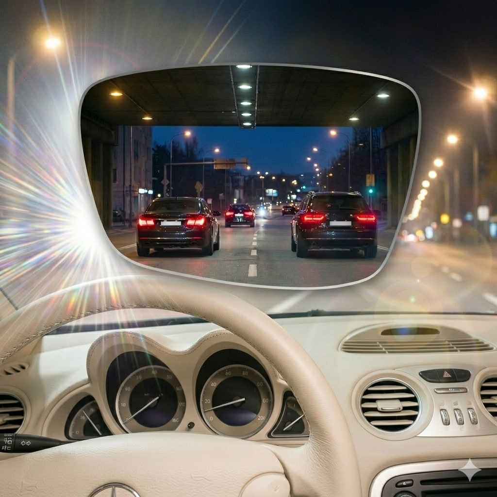
Вождение
Меньше бликов — больше уверенности на дороге
От 3 200 ₽
к базовому комплекту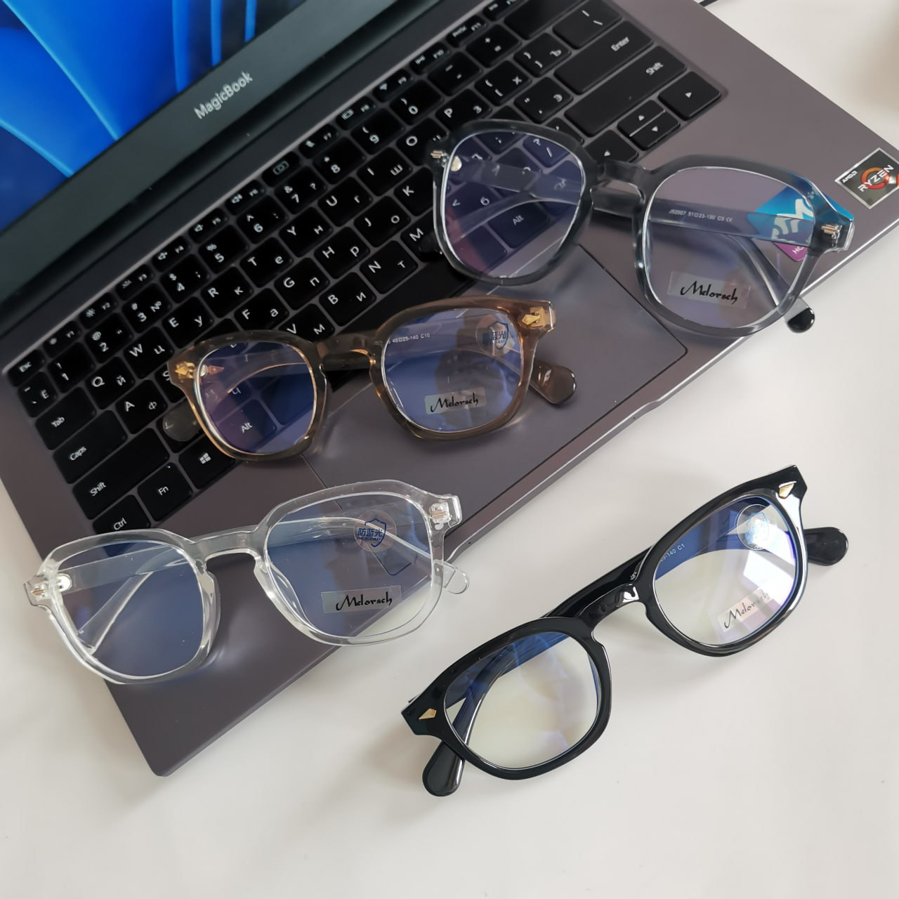
Работа за компьютером
Глаза меньше устают к концу дня. Очки для компьютера в Нижнем Новгороде — от 3 200 ₽.
От 3 200 ₽
к базовому комплекту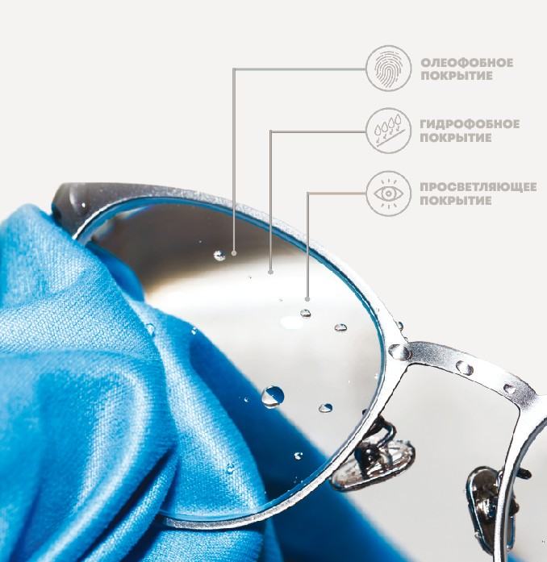
Уход и долговечность
Меньше следов и царапин каждый день
От 3 600 ₽
к базовому комплекту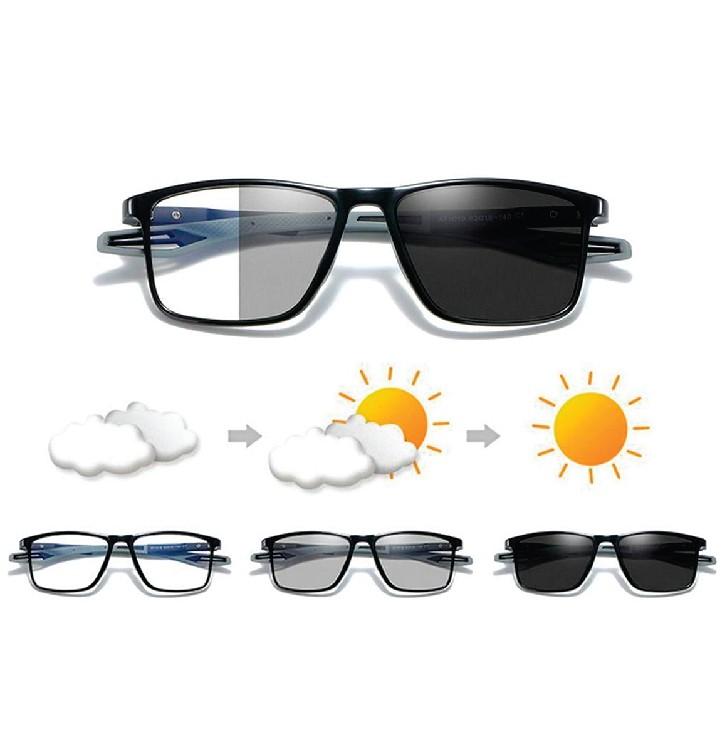
Фотохром
Одна пара очков для дома и улицы
От 3 900 ₽
к базовому комплекту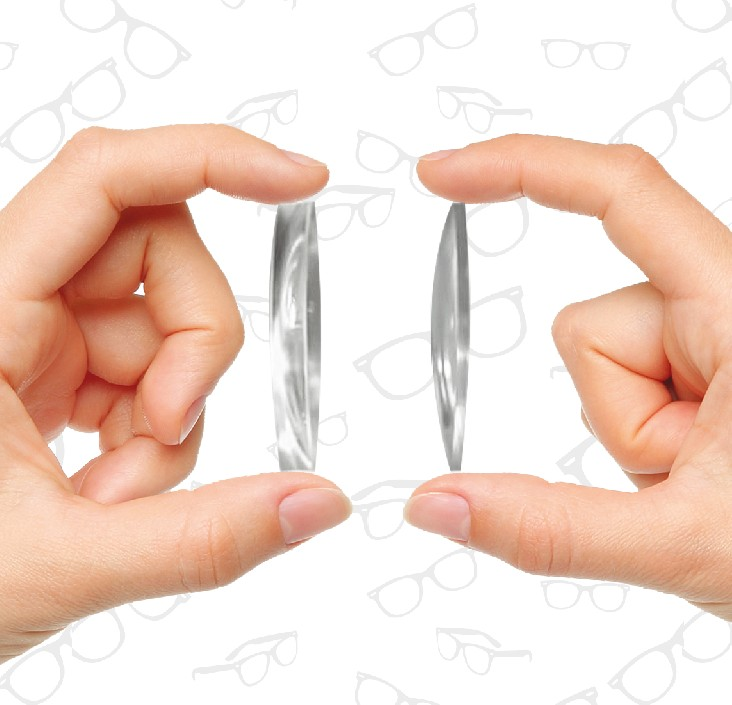
Большие диоптрии
Аккуратный вид и меньше давления на переносицу
От 6 200 ₽
к базовому комплектуДетское зрение
Инновационные технологии замедления роста близорукости
От 17 600 ₽
к базовому комплектуПрограмма «Защита цены»
Мы напрямую работаем с BBGR, ESSILOR, LENCOR и CRYOL. Если вы найдёте такую же модель линзы дешевле в оптиках нашего города — мы вернём разницу.
Без споров и скрытых условий.
Записаться и получить лучшую ценуОптимальный выбор оправ в Нижнем Новгороде
— более 1 000 в наличии
Новые модели появляются каждые 2 недели.
Мы не держим «старые остатки», обновляем ассортимент каждые 14 дней — лучше увидеть и примерить лично.
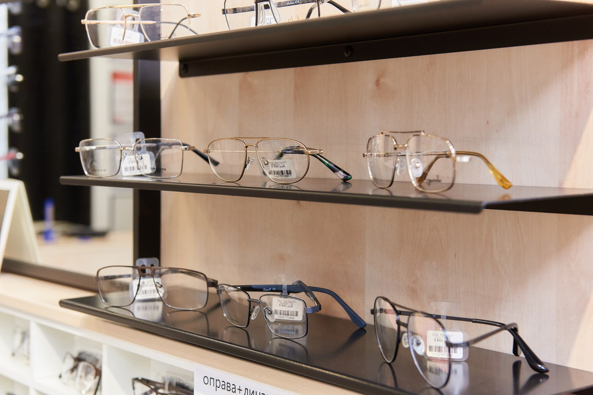
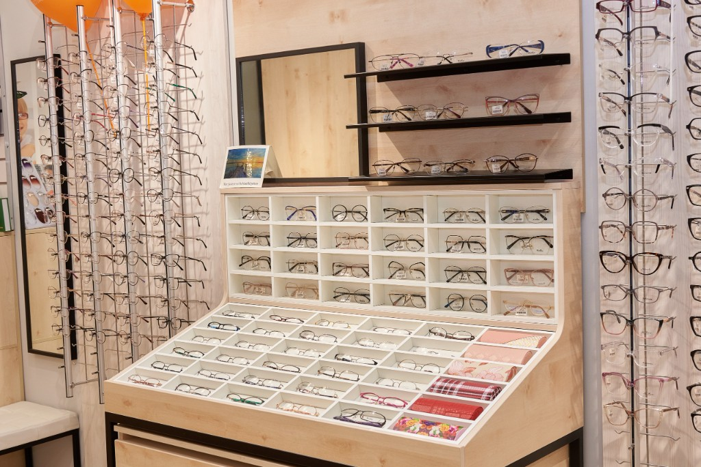
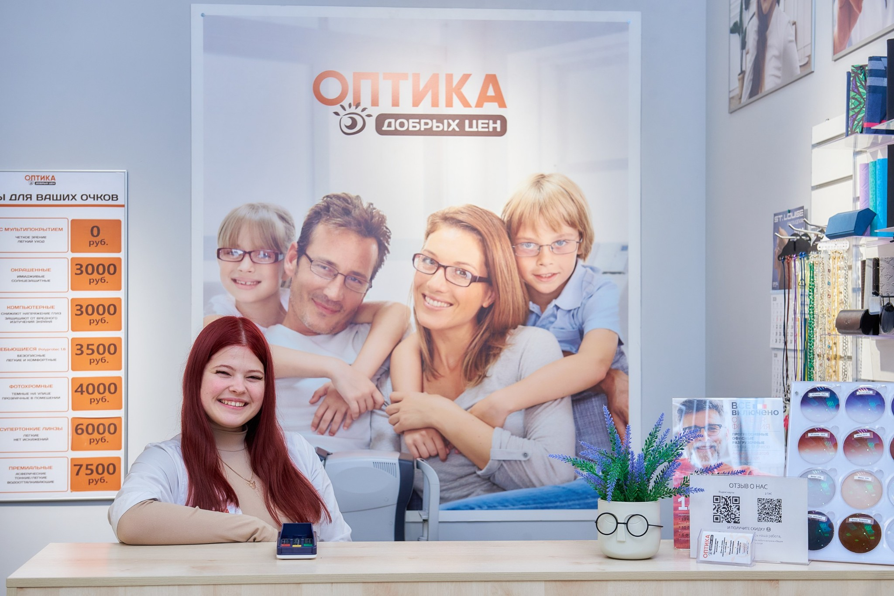
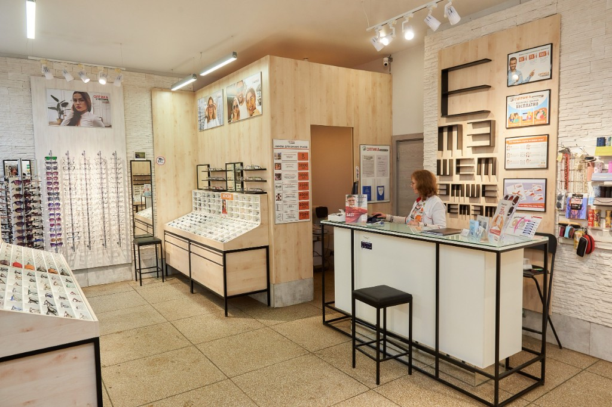
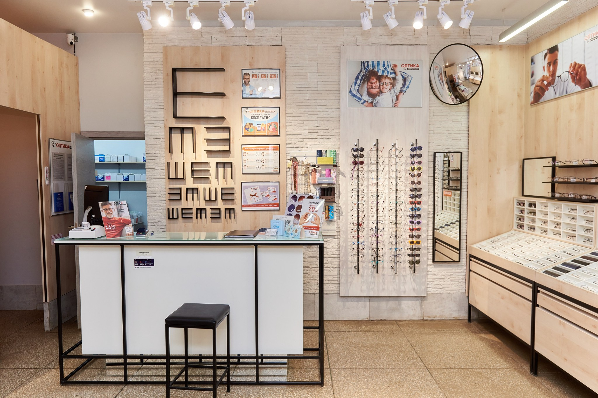
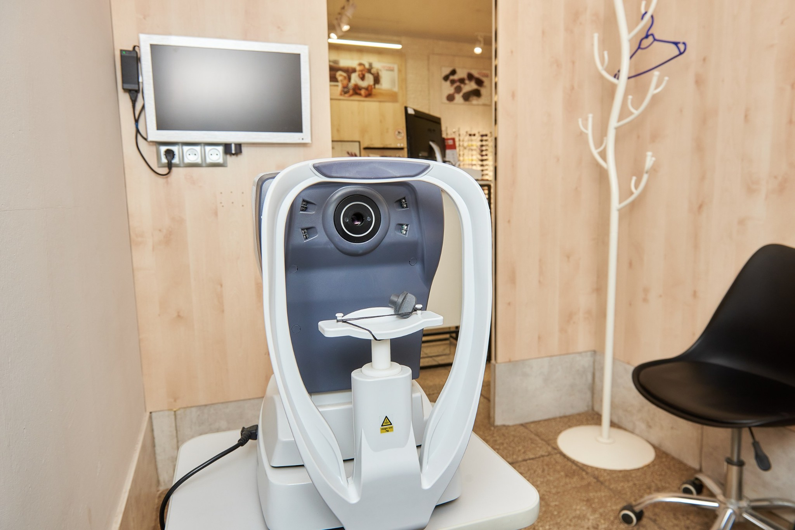
В салонах представлены оправы:
- для повседневной носки
- деловые и строгие
- яркие и модные
- детские модели
Консультант подберет оправу под форму лица и стиль.
Выгодные предложения этого сезона
Специальные условия на популярные решения.
Отзывы об оптике в Нижнем Новгороде
Реальные отзывы о нашей оптике — с карточек в Яндекс.Картах. К нам приходят, чтобы спокойно подобрать очки без навязывания и непонятных доплат.
«Не в первый раз обращаюсь за покупкой оптики (очков) в данную торговую точку и всегда все на высшем уровне: клиентоориентированность персонала + цена + качество + выбор товара. Рекомендую уже неоднократно. Компании успеха и процветания!»
Открыть карточку на Яндекс.Картах →«Приятная оптика! Хороший ассортимент оправ, в том числе среднего ценового сегмента) На месте проверили зрение и подобрали очки. По срокам изготовления — 2–3 дня. Вежливый персонал. Своим выбором довольна. Рекомендую!!!»
Открыть карточку на Яндекс.Картах →«Узнала про оптику в интернете, обратилась и не пожалела, большой выбор оправ, грамотные специалисты. На месте проверили зрение, посоветовали нужные линзы и через пару дней очки были готовы. Очками очень довольна, всем советую!!»
Открыть карточку на Яндекс.Картах →Наши салоны в Нижнем Новгороде
Выбирайте оптику, которая ближе к дому или работе
Приокский район
Московский район
Ленинский район
Автозаводский район
Сормовский район
Советский район
Почему удобно выбрать нас:
- 10 салонов рядом с домом
- Более 40 000 довольных клиентов в Нижнем Новгороде
- Средний рейтинг 4,99 ★
Почему нас называют Добрая оптика?
Наша философия — честные цены и уважение к клиенту
Официально мы — «Оптика Добрых Цен», но многие в Нижнем Новгороде зовут нас просто Добрая оптика или Добро оптика. Для нас это не просто прозвище — это отражение того, как мы работаем.
Мы верим, что хорошая оптика должна быть доступной: фиксированные цены без скрытых доплат, бесплатная проверка зрения, честная консультация без навязывания. Мы не раздуваем чек «услугами», которые вы не заказывали — вы платите ровно за то, что видите на ценнике. Оправы и линзы закупаем напрямую у производителей, поэтому можем держать цены низкими.
Когда люди говорят «пойду в Добрую оптику», они имеют в виду место, где им не будут продавать лишнее и где за очки не придётся переплачивать. Мы рады такому доверию и стараемся его оправдывать в каждом салоне.
Часто задаваемые вопросы
Ответы на популярные вопросы о проверке зрения, подборе очков и ценах
Почему у вас такая доступная цена? Это за всё?
Да. Цена в прайсе конечная. В неё уже входят:
- оправа;
- линзы с защитным мультипокрытием;
- работа мастера.
Вы платите ровно ту цену, которую видите на ценнике — без доплат за «вставку линз» или «рецепт». Мы закупаем линзы и оправы напрямую у производителей большими партиями, поэтому вы не переплачиваете за посредников и дорогую рекламу.
Где в Нижнем Новгороде можно сделать очки «всё включено»?
В нашей сети работают 9 салонов оптики в разных районах Нижнего Новгорода (Автозаводский, Сормовский, Ленинский, Приокский и Советский). Вы можете выбрать ближайший адрес на карте сайта и записаться на консультацию.
Проверка зрения в Нижнем Новгороде действительно бесплатная?
Да. Проверка зрения в наших салонах бесплатная и занимает 15–20 минут. Мы используем современные авторефрактометры последнего поколения, которые позволяют быстро и точно определить параметры зрения для подбора очков.
Можно ли просто проверить зрение без покупки очков?
Да, конечно. Вы можете пройти проверку зрения и получить профессиональную консультацию нашего специалиста. По результатам диагностики оптик-консультант даст устные рекомендации и подберёт оптимальное решение для вашего комфорта. После этого вы сами решаете, оформлять заказ на очки или нет — никаких обязательств с вашей стороны нет.
Вы подбираете очки детям?
Мы изготавливаем очки для детей любого возраста по рецепту детского офтальмолога. В наших салонах представлен большой выбор лёгких и прочных детских оправ. Мы поможем подобрать модель, которая будет удобной и понравится ребёнку. Проверку зрения в наших салонах мы проводим только для взрослых и подростков старше 18 лет.
Нужно ли записываться на проверку зрения заранее?
Мы принимаем и без записи, в порядке живой очереди. Но запись гарантирует, что специалист сможет уделить время именно вам без ожидания. Если вы цените своё время, рекомендуем оставить заявку на сайте или позвонить в выбранный салон.
Можно ли заказать сложные очки (астигматические или прогрессивные)?
Да. Мы регулярно изготавливаем очки с астигматической коррекцией, а также прогрессивные очки (мультифокальные), которые позволяют чётко видеть и вдаль, и вблизи без необходимости менять оправу. Такие линзы заказываются индивидуально под ваш рецепт.
Как быстро будут готовы мои очки?
Срок изготовления зависит от сложности рецепта. В нашем флагманском салоне на проспекте Ленина, 76 очки по стандартному рецепту будут готовы всего за 1 час. В остальных филиалах срок изготовления обычно составляет от 3 до 7 рабочих дней.
Есть ли гарантия и сервис?
Да. Мы предоставляем гарантию 6 месяцев на изготовление очков и соответствие вашему рецепту. После окончания гарантии мы продолжаем обслуживать ваши очки бесплатно: в течение 2 лет вы можете обратиться в любой салон сети для регулировки оправы, подтяжки винтов и мелкого сервиса.
Можно ли прийти со своим рецептом или оправой?
Да. Если у вас уже есть актуальный рецепт от врача, мы изготовим очки по нему. Также мы можем установить новые линзы в вашу оправу, если она в хорошем состоянии. Оптик-консультант проверит её на пригодность к установке перед оформлением заказа.
Можно ли просто купить очки без проверки зрения?
Да, если у вас есть действующий рецепт от офтальмолога — приходите с ним, и мы сразу подберём оправу и линзы. Если рецепта нет или он устарел, проверим зрение бесплатно прямо в салоне за 15-20 минут.
Вы называетесь «Оптика Добрых Цен», «Добро оптика» или «Добрая оптика»?
Официально мы — «Оптика Добрых Цен», но нам очень нравится, когда нас называют «Доброй оптикой». Главное — не название, а то, что мы сохраняем для вас честные цены и высокое качество сервиса.
Оптика Добрых Цен — сеть салонов оптики в Нижнем Новгороде. Купить очки для зрения можно в любом из 10 салонов: Сормово, Щербинки, Автозаводский и Советский районы. Очки под ключ от 2 990 ₽ — оправа, линзы и работа мастера за одну цену. Бесплатная проверка зрения в каждом салоне.
Подберем очки под ваше зрение и бюджет
Оставьте заявку — подберем несколько вариантов очков, объясним разницу по цене и поможем принять спокойное решение.
Оптик-консультант на Кораблестроителей — обучение с нуля, график 2/2
Открываем новый магазин оптики на Кораблестроителей. Ищем оптика-консультанта. Можно без опыта — всему обучим.
Нам важнее не диплом, а умение общаться с людьми и желание разобраться в новой профессии.
ЧЕМ ЭТА РАБОТА ОТЛИЧАЕТСЯ ОТ ОБЫЧНЫХ ПРОДАЖ:
- Спокойный ритм: в среднем 10-15 клиентов в день. Не конвейер — каждому можно уделить время.
- Работаешь в своем ритме, без постоянного контроля и суеты.
- Профессия на стыке медицины и общения — не просто «стоять за прилавком».
- Рядом с домом: магазин в жилом районе на Кораблестроителях.
ЧТО ТЫ БУДЕШЬ ДЕЛАТЬ:
- Встречать клиентов и помогать подобрать очки.
- Проводить проверку зрения по нашей методике.
- Помогать выбрать оправу и линзы под задачу и бюджет.
- Оформлять заказы и выдавать готовые очки.
ЧТО МЫ ПРЕДЛАГАЕМ:
- Оклад 40 500 ₽ (на руки) + % от продаж без потолка.
- Понятный доход: при выручке 750 000 ₽ — от 66 750 ₽ в месяц (на руки).
- Обучение с нуля перед выходом — 5 дней с практикующим оптометристом.
- Поддержка наставника и помощь в сложных ситуациях.
- График 2/2, смены по 10 часов.
- Полностью оплачиваемый отпуск.
- Войдешь в команду с самого открытия.
НАМ ПОДОЙДЕТ ЧЕЛОВЕК, КОТОРЫЙ:
- Умеет спокойно общаться и объяснять простыми словами.
- Аккуратен и внимателен к деталям.
- Хочет освоить профессию и нормально зарабатывать.
Плюсом будет опыт в продажах, медицине, аптеке, банке, салоне связи или любой работе с людьми. Но если опыта нет — научим.
Пиши или звони Ольге: +7 953 553-05-71
Можно без резюме — просто напиши пару слов о себе. Ответим быстро.